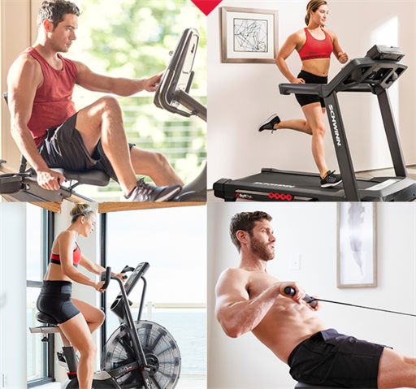

Historia y otros temas · 24 de mayo de 2021
Historia del fitness
Historia del fitness
1. Orígenes en la Antigua Grecia (800-146 a.C.)
- Los gimnasios griegos (gymnasion) eran centros de formación integral, no solo física, sino también intelectual y social. La palabra "gymnos" (desnudo) refleja la práctica de entrenar sin ropa, común entre los hombres jóvenes.
- Los gimnasios estaban diseñados para preparar a los atletas para eventos como los Juegos Olímpicos, pero también fomentaban la filosofía griega de equilibrio entre mente y cuerpo (kalos kagathos: bello y bueno).
- Espacios como la Academia de Platón o el Liceo de Aristóteles combinaban ejercicio físico con debates filosóficos, mostrando una visión holística del bienestar.
2. Declive en la Edad Media (siglos V-XV)
- Con la caída del Imperio Romano y el auge del cristianismo, el énfasis en el cuerpo físico disminuyó, ya que se priorizaba la espiritualidad. Los gimnasios desaparecieron, y el ejercicio físico fue relegado, visto casi como vanidad.
- La actividad física se limitaba a labores manuales o entrenamiento militar, sin un enfoque en la salud o la estética.
3. Resurgimiento en el siglo XIX
- En Alemania, Friedrich Ludwig Jahn, conocido como el "padre de la gimnasia", impulsó los Turnplatz (gimnasios al aire libre) a principios del siglo XIX, promoviendo el ejercicio como herramienta de fortalecimiento nacional tras las guerras napoleónicas.
- En paralelo, en Inglaterra, el movimiento Muscular Christianity vinculaba la forma física con la moralidad y la virilidad, sentando las bases para los gimnasios escolares.
- A finales del siglo XIX, figuras como Eugen Sandow popularizaron el culturismo, combinando ejercicio con espectáculo, lo que dio lugar a una fascinación por la estética corporal.
4. Siglo XX: La era de los gimnasios modernos
- A principios del siglo XX, los gimnasios comenzaron a comercializarse como espacios para el público general, no solo para atletas. Surgieron clubes como el YMCA, que promovían el ejercicio como parte de un estilo de vida saludable.
- En los años 50 y 60, la aparición de máquinas de resistencia (como las de Universal Gym) y pesas libres marcó el inicio de los gimnasios modernos.
- En los 80, el auge del aerobic, impulsado por figuras como Jane Fonda, y el culturismo, con iconos como Arnold Schwarzenegger, consolidaron la industria del fitness como un fenómeno cultural y comercial.
5. Siglo XXI: De la estética al wellness
- La tecnología transformó el fitness: aplicaciones, wearables (como Fitbit o Apple Watch), videojuegos activos (Wii Fit) y plataformas de entrenamiento online (Peloton, apps de yoga) hicieron el ejercicio más accesible.
- La industria de los suplementos dietéticos y las dietas de moda creció exponencialmente, aunque a menudo con promesas exageradas.
- A pesar del auge del fitness, la obesidad y el sedentarismo han aumentado globalmente, lo que refleja una desconexión entre la comercialización del fitness y los resultados reales.
- El concepto de wellness emergió como respuesta, promoviendo un enfoque integral que combina ejercicio, nutrición, salud mental y descanso.
6. Contexto español
- En España, el interés por el fitness creció en los años 80 con la apertura de gimnasios privados y la popularización de deportes como el aerobic.
- En los 90, los centros deportivos comenzaron a integrar servicios de spa, fisioterapia y nutrición, alineándose con la tendencia del wellness.
- Actualmente, España cuenta con una industria del fitness robusta, con cadenas de gimnasios low-cost (Basic-Fit, McFit) y un auge de actividades como CrossFit, yoga y entrenamiento funcional.
7. Paradoja actual
- La industria del fitness genera miles de millones de euros al año (en 2023, el mercado global del fitness superó los 100 mil millones de dólares), pero los índices de obesidad y sedentarismo no disminuyen significativamente.
- Esto se debe a una promoción excesiva de la estética (el "cuerpo perfecto") en lugar de la salud integral, lo que lleva a expectativas poco realistas y abandono del ejercicio.
- El cambio hacia el wellness busca corregir esto, promoviendo hábitos sostenibles y un enfoque más humano.
